ggplot2 can not draw true 3D surfaces, but you can use geom_contour(),
geom_contour_filled(), and geom_tile() to visualise 3D surfaces in 2D. To
specify a valid surface, the data must contain x, y, and z coordinates,
and each unique combination of x and y can appear at most once.
Contouring requires that the points can be rearranged so that the z values
form a matrix, with rows corresponding to unique x values, and columns
corresponding to unique y values. Missing entries are allowed, but contouring
will only be done on cells of the grid with all four z values present. If
your data is irregular, you can interpolate to a grid before visualising
using the interp::interp() function from the interp package
(or one of the interpolating functions from the akima package.)
geom_contour( mapping = NULL, data = NULL, stat = "contour", position = "identity", ..., bins = NULL, binwidth = NULL, breaks = NULL, lineend = "butt", linejoin = "round", linemitre = 10, na.rm = FALSE, show.legend = NA, inherit.aes = TRUE ) geom_contour_filled( mapping = NULL, data = NULL, stat = "contour_filled", position = "identity", ..., bins = NULL, binwidth = NULL, breaks = NULL, na.rm = FALSE, show.legend = NA, inherit.aes = TRUE ) stat_contour( mapping = NULL, data = NULL, geom = "contour", position = "identity", ..., bins = NULL, binwidth = NULL, breaks = NULL, na.rm = FALSE, show.legend = NA, inherit.aes = TRUE ) stat_contour_filled( mapping = NULL, data = NULL, geom = "contour_filled", position = "identity", ..., bins = NULL, binwidth = NULL, breaks = NULL, na.rm = FALSE, show.legend = NA, inherit.aes = TRUE )
| mapping | Set of aesthetic mappings created by |
|---|---|
| data | The data to be displayed in this layer. There are three options: If A A |
| stat | The statistical transformation to use on the data for this layer, as a string. |
| position | Position adjustment, either as a string, or the result of a call to a position adjustment function. |
| ... | Other arguments passed on to |
| bins | Number of contour bins. Overridden by |
| binwidth | The width of the contour bins. Overridden by |
| breaks | Numeric vector to set the contour breaks. Overrides |
| lineend | Line end style (round, butt, square). |
| linejoin | Line join style (round, mitre, bevel). |
| linemitre | Line mitre limit (number greater than 1). |
| na.rm | If |
| show.legend | logical. Should this layer be included in the legends?
|
| inherit.aes | If |
| geom | The geometric object to use display the data |
geom_contour() understands the following aesthetics (required aesthetics are in bold):
x
y
alpha
colour
group
linetype
size
weight
Learn more about setting these aesthetics in vignette("ggplot2-specs").
geom_contour_filled() understands the following aesthetics (required aesthetics are in bold):
x
y
alpha
colour
fill
group
linetype
size
subgroup
Learn more about setting these aesthetics in vignette("ggplot2-specs").
stat_contour() understands the following aesthetics (required aesthetics are in bold):
x
y
z
group
order
Learn more about setting these aesthetics in vignette("ggplot2-specs").
stat_contour_filled() understands the following aesthetics (required aesthetics are in bold):
x
y
z
fill
group
order
Learn more about setting these aesthetics in vignette("ggplot2-specs").
The computed variables differ somewhat for contour lines (computed by
stat_contour()) and contour bands (filled contours, computed by stat_contour_filled()).
The variables nlevel and piece are available for both, whereas level_low, level_high,
and level_mid are only available for bands. The variable level is a numeric or a factor
depending on whether lines or bands are calculated.
levelHeight of contour. For contour lines, this is numeric vector that represents bin boundaries. For contour bands, this is an ordered factor that represents bin ranges.
level_low, level_high, level_mid(contour bands only) Lower and upper bin boundaries for each band, as well the mid point between the boundaries.
nlevelHeight of contour, scaled to maximum of 1.
pieceContour piece (an integer).
geom_density_2d(): 2d density contours
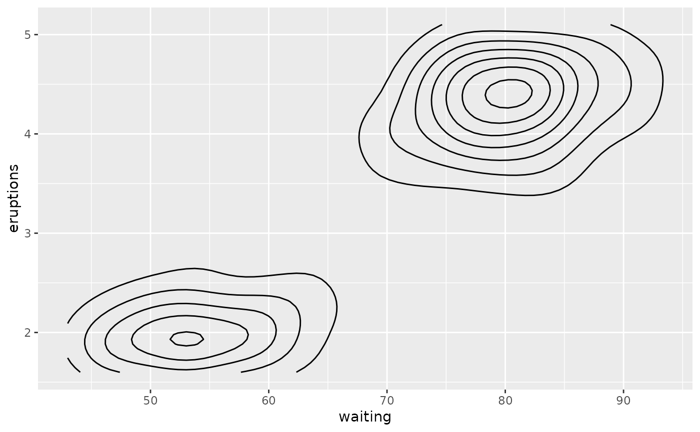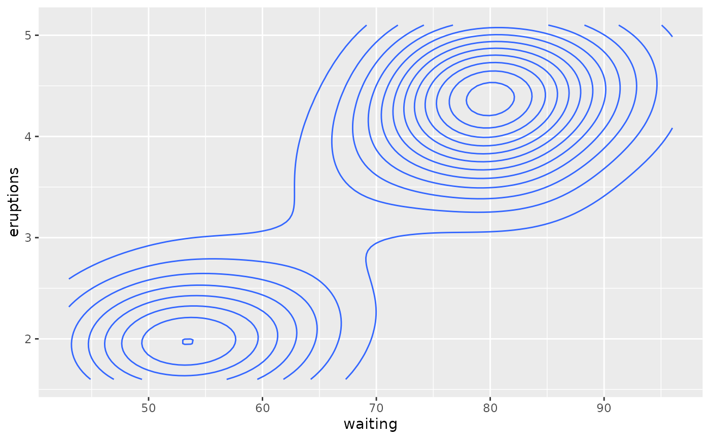# \donttest{ # use geom_contour_filled() for filled contours v + geom_contour_filled()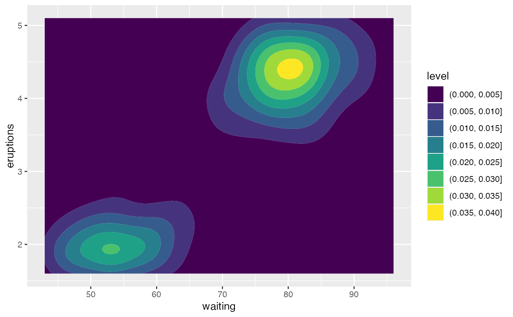# Setting bins creates evenly spaced contours in the range of the data v + geom_contour(bins = 3)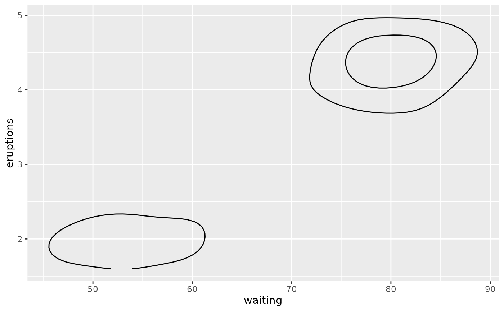v + geom_contour(bins = 5)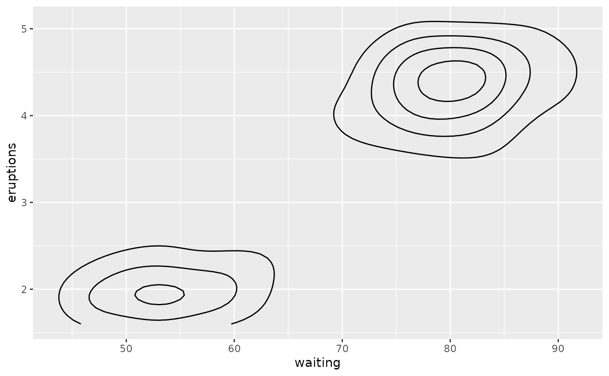# Setting binwidth does the same thing, parameterised by the distance # between contours v + geom_contour(binwidth = 0.01)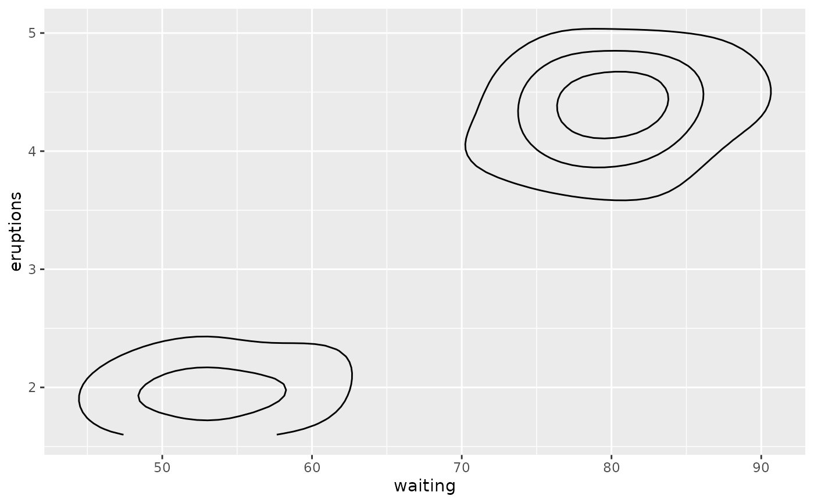v + geom_contour(binwidth = 0.001)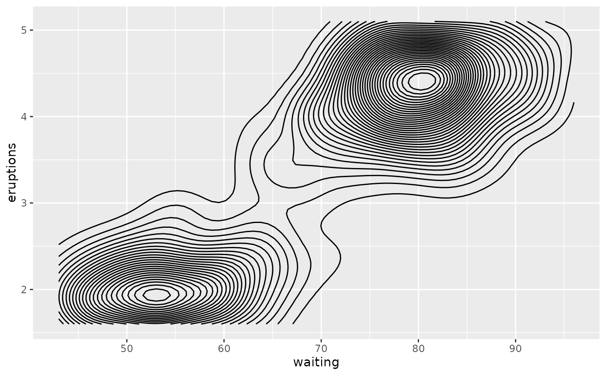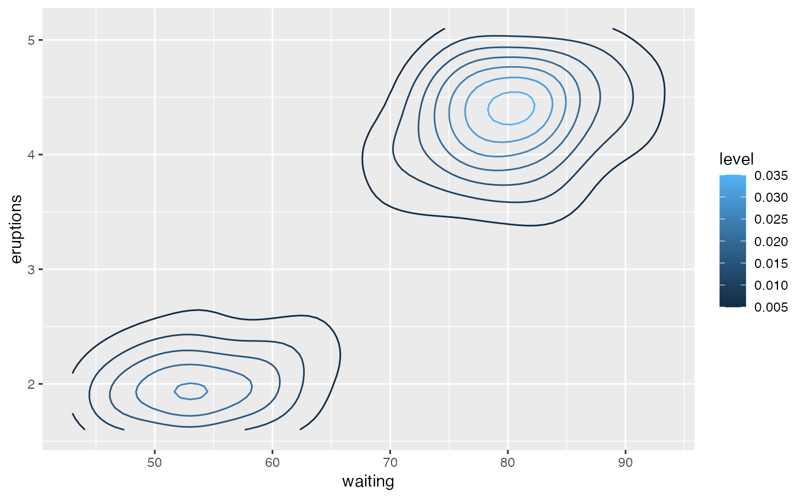v + geom_contour(colour = "red")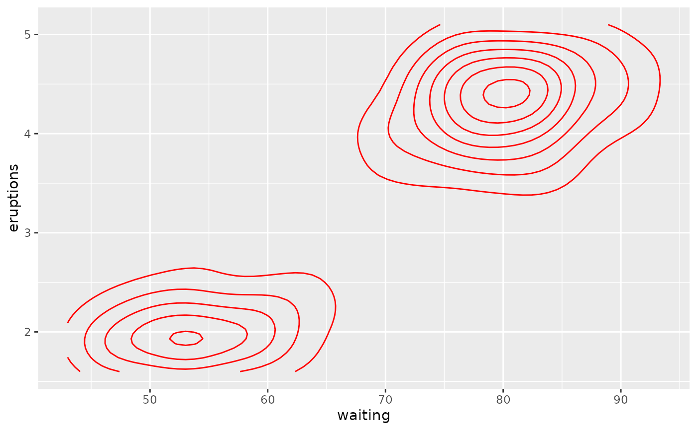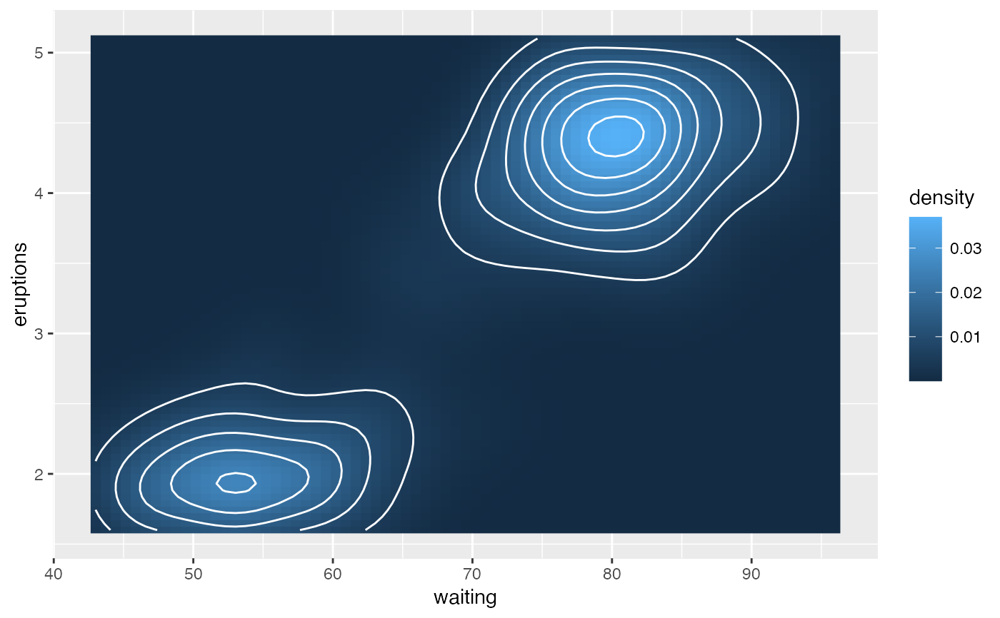# Irregular data if (requireNamespace("interp")) { # Use a dataset from the interp package data(franke, package = "interp") origdata <- as.data.frame(interp::franke.data(1, 1, franke)) grid <- with(origdata, interp::interp(x, y, z)) griddf <- subset(data.frame(x = rep(grid$x, nrow(grid$z)), y = rep(grid$y, each = ncol(grid$z)), z = as.numeric(grid$z)), !is.na(z)) ggplot(griddf, aes(x, y, z = z)) + geom_contour_filled() + geom_point(data = origdata) } else message("Irregular data requires the 'interp' package")#>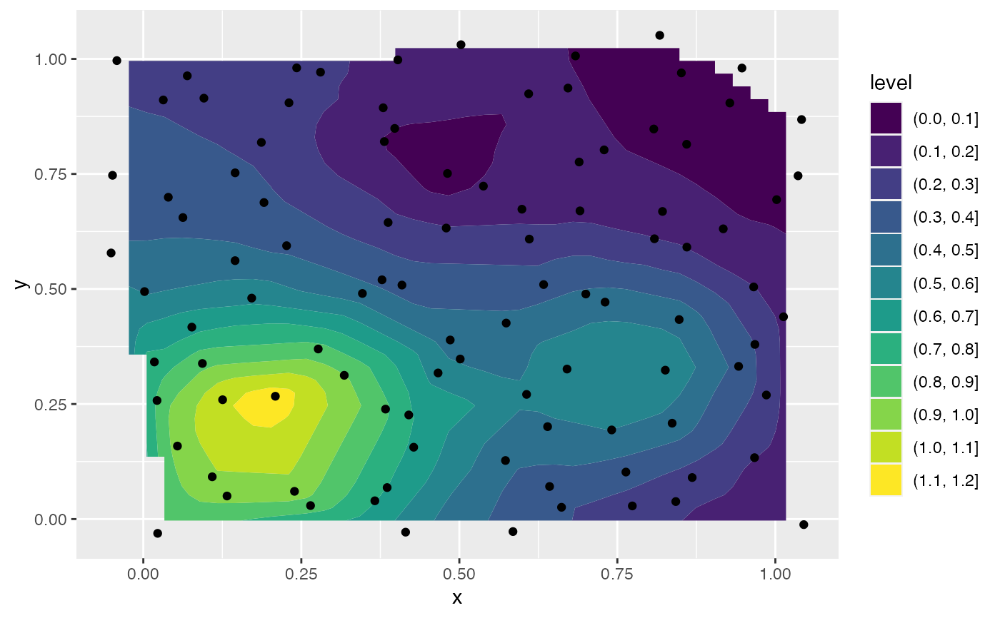# }